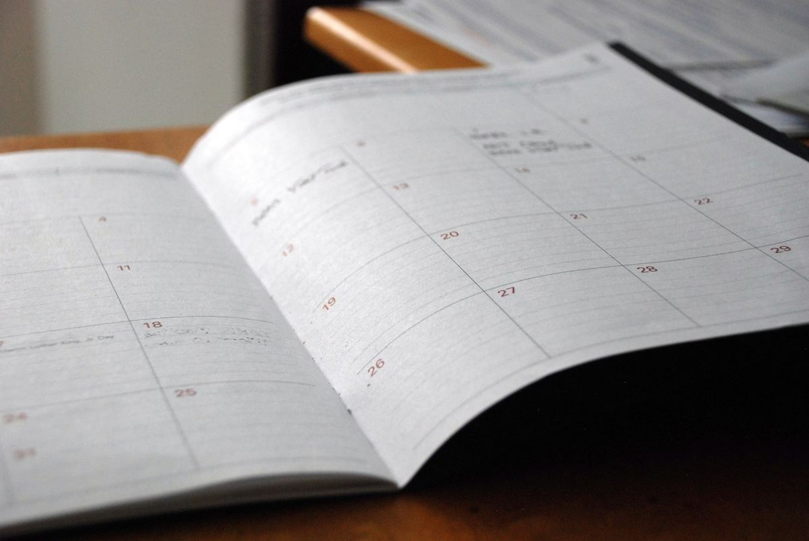

30万円
ホームページ制作
- 複数ページの本格的なホームページ
- 事業所の写真撮影
- お知らせ・ブログの機能
- 見学・お問い合わせへの導線づくり
補助金活用支援 ＞ パッケージの具体例
小規模事業者持続化補助金｜パッケージの具体例ホームページ・パンフレット・看板・Googleマップを、まとめて整えるパッケージです。補助金の計画書づくりのアドバイスもセットです。
※補助率2/3・補助上限50万円（通常枠）の場合です。採択・交付決定を保証するものではありません。
この補助金は、使ったお金の3分の2（上限50万円）が戻ってくる制度です。75万円は、上限の50万円をちょうど受け取れる金額です。
先に75万円をご用意いただく必要があります。資金のご準備についても、最初のご相談で一緒に確認します。
紙・看板・インターネットの集客を組み合わせた内容です。事業所の状況に合わせて、中身は入れ替えられます。
30万円
25万円
10万円
10万円
追加料金なしパッケージに含まれるサポート
※ホームページ・Web関連の補助は30万円まで、という決まりがあります。このパッケージはその範囲に収まるように組んでいます（ホームページとWeb集客で合計40万円＝補助は約26.7万円）。
チラシや看板で知った方も、多くはホームページを見てから連絡します。入口と受け皿を一緒に整えるのがポイントです。
① 知ってもらう
② 確かめてもらう
③ 連絡してもらう
補助金の決まりで、制作を始められるのは「採択・交付決定」のあとです。それまでの準備は計画書づくりだけ。採択されるかどうかも、計画書の中身で決まります。

私たちは、ここにいちばん力を入れます。強み・お客様像・やりたいことを一緒に整理し、お客様が書いた計画書にアドバイスします。
申請の前
対象になるかを確認し、計画書の中身を一緒に考えます。お客様は計画書を書き、商工会・商工会議所で必要な書類（事業支援計画書）を受け取ります。
ここに力を入れます申請
見積書は私たちが用意します。申請の手続きは、お客様ご自身で行っていただきます。
結果を待つ（数か月）
ここで初めてご契約・ご発注です。採択されなかった場合、費用はかかりません。
この前に作ったものは補助の対象外制作
ホームページ・パンフレット・看板などを作り、公開・配布します。完成後に全額をお振込みいただきます。
報告
実績報告の書き方をアドバイスします。報告のあと、補助金が入金されます。公開後は3回、効果を一緒に振り返ります。
補助金の申請は、事業者さまご自身が行う決まりです。私たちは「何を書けばよいか」の整理と、集客の道具づくりを担当します。
申請書類の作成代行・代理申請は行いません。 計画書の文章はお客様ご自身で書いていただきます。書類の作成まで任せたい場合は、必要に応じて行政書士などの専門家をご紹介します（費用は別途）。